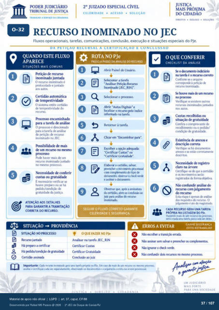

Transcrição automática em português, ainda não revisada. Confira grafia, prazos e termos jurídicos na imagem e no PDF antes de utilizar.
TRABALHO A SERVIÇO DA CIDADANIA
CELERIDADE • ACESSO • SOLUÇÃO
DIREITOS • •
RECURSO INOMINADO NO JEC
Fluxos operacionais. tarefas, comunicações. conclusão, execução e situações especiais do PJe.
DA PEIAÇAO RECURSAL A CERIM•ICAÇAO E CONCLUSSAO
QUANDO ESTE FLUXO
APARECE
SITUAÇÕES MAIS COMUNS
Petição de recurM) inominado juntada
O recurso irwminado é protocolado e juntado
aos autos. Certidão automática
de temFstividade O sistema emite certidão
de temv*stividade do recurso.
Prcresso encaminhado para a tarefa de análise
O prtXesso é para a tarefa de análise
de Ftiçào recurso inorninado no JEC.
Possibilidade de mais de um recur*) no
P'" haver mais de um incyninado juntado
no nrsmo de conferir
custas ou gratuidade É necessário verificar
houve preparo ou há gratuidack da justiça.
ATENÇÃO AOS DETALHES
PARA GARANTIR A TRAMITAÇÃO
CORRETA DO RECURSO.
SITUAÇÃO -+ PROVIDÊNCIA
ROTA NO PJe
PASSO A PASSO DA ANÁLISE DO RECURSO
Abrir Painel do Usuário. a tarefa
Analisar Petição Inorninacb IJEC_RINI
Abrir "Autos Digitais" e O
5 localizar o recurso Elo índice
informado na tarefa. Retornar à tarefa.
Clicar em -ErrarniÑiar para'. Escolher a
"Certificar Custas" -Certificar Gratukia€.
Elatx»ru a certidão. salvar. 0 rnovinpnto
ccxn complernento do tipo de (krunvnto. 0
e assiur o Chsen•ar que, a xsinatura
da certidão. juiz para análise do
inominado.
O QUE CONFERIR
CHECKLIST DA ANÁLISE
Se o indkiário na tarefa é o recurs) correto
Confirnr o arquivo corresprxk à B'tiÇà0
r«urso in«yninach Se Imve nuis de um recur*)
no prcresso Verifique se existem mitros
recursos irwrninaú)s juntos nos autcs.
Custas ou situação de gratuidack
Confira o comprovante de recolhimento ou 0 gx•dicb/
condição gratuidade. Existência anext:s e
c«reta verifique se hà
anexos e estão corretamente Necessidade de registro
Certifiwe-se que a e os movinM1tos
registradcs de forma (bjetiva. confundir do
recurv» com julgarnento do r«urso
Esta etapa é armas análise dos requisitos recurso. O
julganwlto é ato magistracb.
SEGUIR O FLUXO CORRETO GARANTE
CELERIDADE E SEGURANÇA.
SITUAÇÃO NO
Recurx• Há preparo a certifxar
Há yatuic" Cert&) assinada
OQUE FAZER NO PJe
Analisar na tarefa JEC_RIN Certificar Custas
Certificar Gratuidade Corrlusio ao juiz
e e
e
CADA RECURSO GERA UMA TAREFA
PRÓPRIA NA LISTAGEM PJe.
Havendo mais de um recurso no será una tarefa para cada
GANHE SEGURANÇA
ERROS A EVITAR
EVITE RETRABALHO
Não 6colter a transi«) errxia. Não salvar e preerrf•M os complementos.
Não ignMar 0 cmftgxiir chis r«ursos mesmo
recurw rr-a una tuefa provia Em caso mais um recurv» rrvsmo e certiflqt* e a correta na
UM JUDICIÁRIO
MAIS FORTE
PARA UMA SOCIEDADE
Ver também o infográfico original (página 37)
